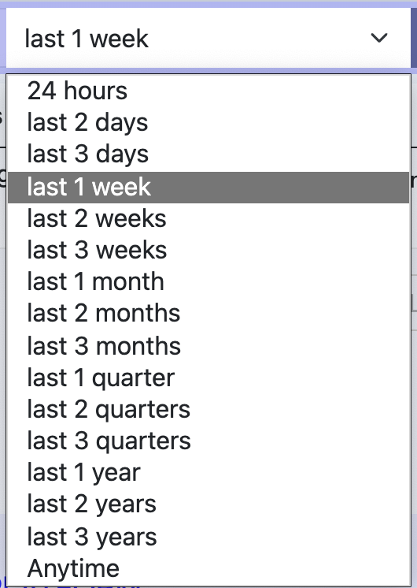
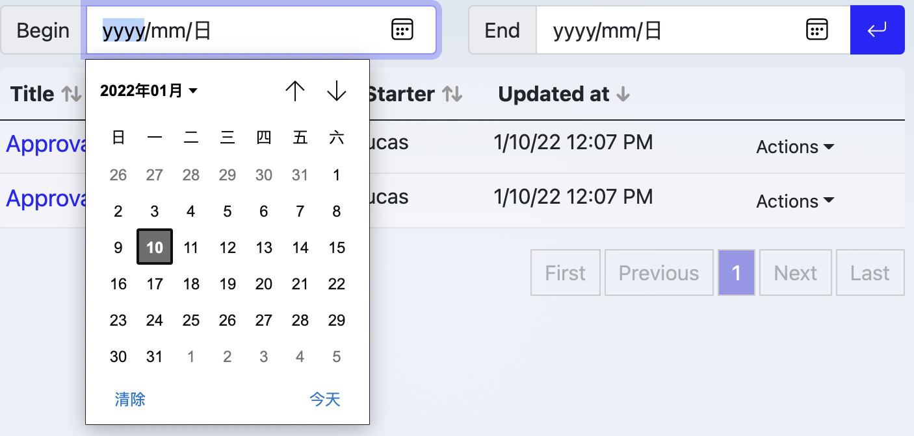

Process Explorer
Process Explorer shows all processes, allowing management of these processes.
User Interface

Top buttons
- Reset Query: clear out any specified query criteria
Template explorer provides detailed criteria for searching, Reset Query is used to reset query critera by one-click
Tags Area
Tags are used to categorize prococesses, organizaiton level tags are defined by administrators and available for everyone in your organizaiton, while personal tags are available individually.
- organizaitonal tags are displayed in a round corner rectangle, like

- personal tags are displayed in a pill, like

Click a tag, explorer will search those processes which template has with the tag and display them in the result table at the lower part of explorer.
Extra Filter Area
Template
Filter processes with template id, only selected template's processes will be displayed.
Starter
Filter processes with starter email. "Me" sorts out processes start by you.
Title filter
Filter processes by process title
Time
Filter processes by starting time.
Within some time:

Between two dates:

Result Table
List out any processes meet above requirements: tag, name filter, author， time span etc.

The first column is Process Title, clicking it will lead to process overview page.
The fourth column is Action menu:

Those actions are:
Running Works-
See running work items belong to this process
All Works-
See all work items belong to this process
Pause/Resume-
Pause this process if it's running. running tasks are also paused (not be seen in work list). Resume this process if it is paused.
Stop-
Stop (or cancel) of this process
Restart-
Dismiss it's running and restart from the beginning
Start Another-
Start another process
View Template-
View the template of this process
View Instance Template-
View the instance template of this process. Once user start a process with a template, an instance template will be bundled to the process, after that, user might make some changes to the original template, while the instance template keep untouched.
Delete This Workflow-
Delete this workflow process
Visibility
Normal users can see processes only when:
- The template of process is visible for he/her, and
- he/she started or be involved into,.
see template visiblity.
Administrators can see all processes.
Pagination

Use pagination to browser more results